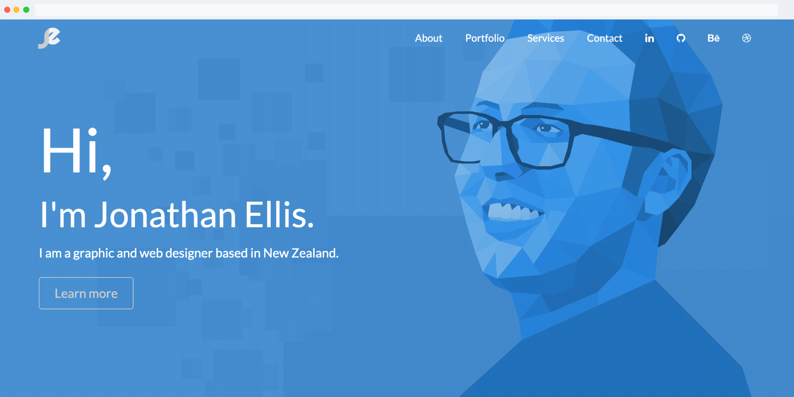
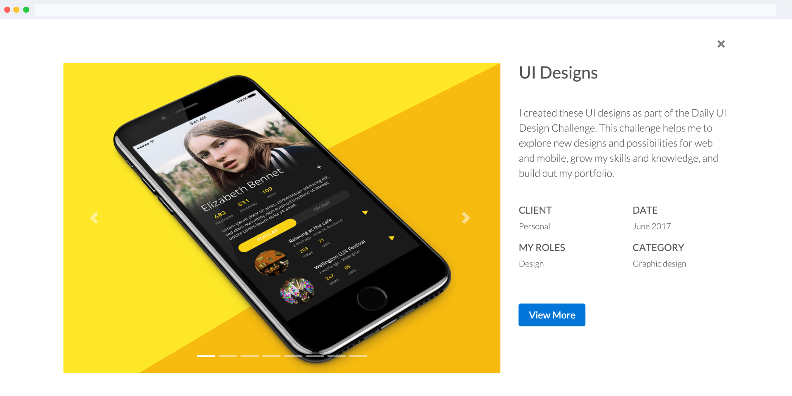
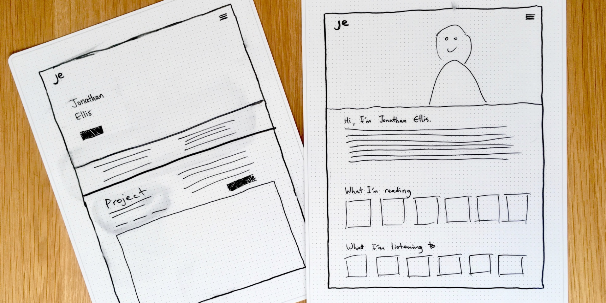
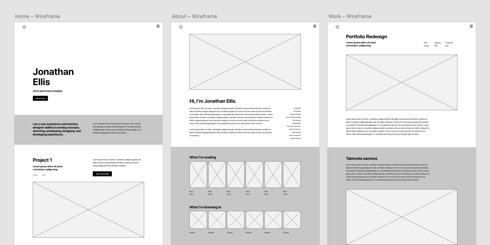
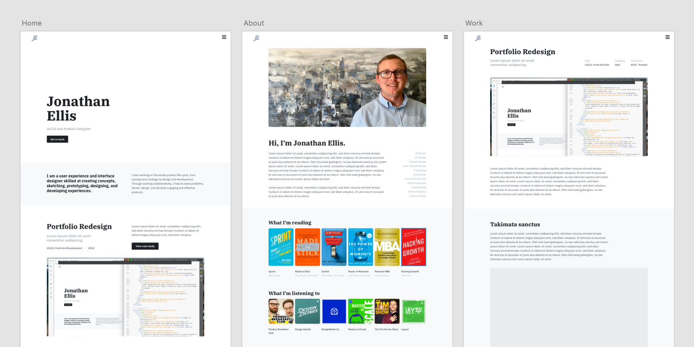

Role
UX, UI, Front-End Dev
Category
Web
Timeframe
2018 - 2019
Role
UX, UI, Front-End Dev
Timeframe
2018 - 2019
The goal of this project was to update my website and my portfolio of work. Rather than just doing a visual refresh, I felt it was important to refocus my portfolio on what matters most — showcasing my creative process. My old website design focused heavily on its visual design but it did not show my process and how I go about solving problems. Therefore, I set out to create a new website that focuses on the content and the story, rather than the visual design.
This new website better describes and showcases my design process — how I gather understanding of the problem and people, concept ideas, and then execute the project based on those concepts.
While my old portfolio had served me well for a couple years, it really fell short in content and showing the processes I follow. Because I had spent too much effort on the visual style, the pieces of work I showed lacked information describing the context and process of the project — what the problem was, who the audience was, and how I went about devising and designing a solution.
Header section of old website.
Portfolio item from old website.
I began a period of research by looking at the portfolios of other designers that I admired, reading articles about writing case studies, and seeking advice about what my focus should be. One of the most helpful pieces of advice I heard came from Sarah Doody's UX Portfolio course, “You are the not the user of your portfolio”. This statement helped me to focus on the end user and utilise the same process when designing any other solution — research, define the problem, iterate, and develop.
The next step in this process was forming a career compass statement — one or two sentences that concisely describe what I do, why I do it, and where I want to go.
"I am a user experience and product designer skilled at designing and developing user-centric, engaging, and effective digital experiences. I love solving problems and working collaboratively on the whole product life cycle — understanding the user's needs, creating wireframes, making prototypes, and building products."
This compass statement allowed me to focus on my professional goals and how my portfolio should be presented.
Following that, I began writing case studies and gathering assets for a few projects. Rather than just showing deliverables, I wanted to focus on the journey that was taken to arrive at those conclusions. This was the first time I had really sat down to write about my process and showcase how I work. It has been a very enlightening learning experience and I believe I am much better off for practising this skill.
Once I had my case studies together, I shifted my focus to the visual refresh of my website. My primary goal was to create a restrained visual style and palette so that the story the content tells would take centre stage. I drew a couple sketches for the home and content pages and then used a design tool to begin creating wireframes.
A couple sketches for my new portfolio.
Wireframes for several page designs.
Once the wireframes were completed, I developed a simple Styleguide consisting of a colour palette and typographic styles. The decisions I made when creating this system were influenced by the same desire to highlight the content rather than the design.
grey-700
#1C1F24
grey-600
#485057
grey-500
#848E97
grey-400
#ACB5BE
grey-300
#D0D4DB
grey-200
#E8ECEE
grey-100
#F8F9FB
font-family: “IBM Plex Serif”, serif;
font-size: 42px;
font-weight: 700;
line-height: 51px;
color: var(—grey-700);
h1
font-family: “IBM Plex Serif”, serif;
font-size: 34px;
font-weight: 700;
line-height: 40px;
color: var(—grey-700);
h2
font-family: “IBM Plex Serif”, serif;
font-size: 30px;
font-weight: 700;
line-height: 36px;
color: var(—grey-700);
h3
font-family: “IBM Plex Sans”, sans-serif;
font-size: 22px;
font-weight: 600;
line-height: 32px;
color: var(—grey-500);
h4
font-family: “IBM Plex Sans”, sans-serif;
font-size: 20px;
font-weight: 400;
line-height: 30px;
color: var(—grey-600);
h5
All you have to decide is what to do with the time that is given to you.
font-family: “IBM Plex Sans”, sans-serif;
font-size: 18px;
font-weight: 400;
line-height: 30px;
color: var(—grey-600);
body
With these choices made, I created a few mockups from the wireframes.
Page mockups ready for development.
Finally, it was time to develop my website. I have quite a bit of experience as a JAMstack developer so it was fairly straightforward to develop my designs into a functioning website using HTML markup, CSS, and some JavaScript. I also decided to use the Bootstrap framework because it provides responsive functionality and a lot of helpful components and utility classes.
My new portfolio does a far better job of truly describing how I work as a designer and what motivates me to find solutions to problems. While my old portfolio had a more opinionated visual style and more “eye candy”, my current portfolio focuses on what matters most — showing my process and taking readers on the journey that I took to define the problem, understand the people, create a strategy, and execute the solution.
As a result, I have developed a good platform on which to iterate and expand further, add new case studies, and share my process with fellow designers and companies.